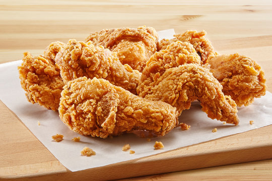

Fried Chicken

Description
Fried chicken is a beloved dish known for its crispy exterior and juicy interior
that is perfect for any occasion.
Ingredients
- Chicken pieces (legs, thighs, breasts)
- Flour
- Buttermilk
- Eggs
- Salt
- Pepper
- Garlic powder
- Onion powder
- Paprika
- Oil for frying
Steps
- In a bowl, mix flour, salt, pepper, garlic powder, onion powder, and paprika.
- In another bowl, whisk together buttermilk and eggs.
- Dip each piece of chicken into the buttermilk mixture, then coat with the flour mixture.
- Heat oil in a deep skillet or fryer to 350°F (175°C).
- Fry the chicken pieces in batches until golden brown and cooked through, about 15-18 minutes.
- Drain on paper towels and let rest for a few minutes before serving.
- Serve hot with your favorite sides.